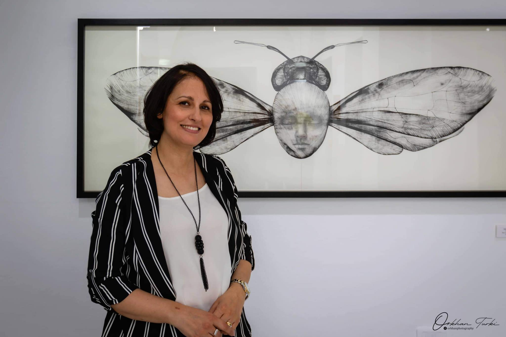

Du lyrisme au conceptuel dans les dessins De Chahrazed Fkih
Houcine Tlili : |
Chahrazed Sbiaa Fkih Chahrazed Sbiaa Fkih est cette jeune artiste née à Bekalta, qui a entamé des études d’arts plastiques à Sfax (ISAMS) et les a poursuivies àTunis (ISBAT) pour finir par les enseigner en 2002 dans un lycée puis a partir de 2006 à l’institut supérieur des beaux arts de Tunis. Parallèlement a cet effort pédagogique qu’elle a fourni a l’institut de Bab Saadoun, Chahrazed Fkih s’est essayée progressivement à intégrer le champs de la pratique artistique en élaborant des créations de peinture a l’acrylique, a l’aquarelle mais aussi en passant par le dessin, dans le cadre des manifestations et des expositions collectives qui se sont tenues à Tunis et ailleurs. Le dessin, en particulier, prenait de plus en plus d’importance dans le travail de la jeune artiste et commençait même à prendre le pas sur toutes les autres formes d’art de la bi dimensionnalité, et plus particulièrement sur celle de la peinture. .
Le dessin comme activité de saisie graphique du monde sur laquelle elle s’appuie est le même art qui a été utilisé par les grands génies qui dominent l’histoire de l’art comme, L. Da Vinci sur ces planches anatomiques, dans ces schémas mécaniques et explorations géométriques de la perspective, tout comme dans ces plans architecturaux et comme instrument magnifique d’appréhension du réel au même temps comme concrétisation puissante de son imaginaire. Le dessin, comme art souverain l’a, emporté également chez Bruegel, chez Rubens, Ingres et plus tard chez Picasso et Braque… etc.
En Tunisie, et toute proportions gardée, les artistes, comme Z. Turki, A. Gorgi ou plus moderne, Taher Mgadmini se sont illustrés dans la pratique du dessin. Beaucoup de sculpteurs tunisiens se sont également exprimés à travers le dessin, comme Hechmi Marzouk et Hedi Selmi…. Etc.
Le dessin …n’a-t-il pas été également un moyen important, presque exclusif, dans les premiers exercices d’appropriation de la nature par l’Homme et dans ses représentations linéaires des choses de la vie ?
L’homme alors, a commencé à utiliser la ligne, le trait, le dessin pour exprimer sa volonté de comprendre le monde au niveau du paléolithique et du néolithique il y a de cela des milliers d’années. Le dessin a continué à se développer et à devenir l’apanage des grandes civilisations historiques jusqu'à celle extrême orientale du Tao, des exploits de l’arabesque arabo-musulmane et du dessin des contours des miniatures de l’école de Baghdâd ou de celle des Chah-in Chah perses… Oui le dessin possède des atouts graphiques, analytiques de ‘’décortications’’, de séparations mais aussi de synthèses des objets représentés, sans oublier les moyens expressifs qu’il déploie partout d’une manière universelle. Le dessin est donc, proprement humain, en rapport éternel avec l’ambition de l’homme de connaitre et de dominer le monde à travers les lignes et les couleurs c.à.d. à travers l’art.
Le dessin est donc une discipline aussi bien artistique, poétique, inanalysable qu’un moyen privilégié d’analyse, un moyen de lucidité et d’approche presque scientifique des choses. C’est en outre un moyen privilégié pour que beaucoup d’artistes lui octroient la primauté dans leur pratique artistique bidimensionnelle surtout par rapport à l’autre discipline picturale : la couleur.
Chahrazed Fkih, forte d’une culture principalement graphique a choisi d’être une artiste linéariste. Elle le prouve aujourd’hui dans cette exposition qu’elle va déployer bientôt dans un espace de Sidi Bousaid.
Dans cette exposition projetée, Chahrazed Fkih s’empare de la ligne pour en faire un moyen essentiel pour exprimer son choix du dessin comme élément principal de sa démarche.
En effet la pratique linéaire proposée par l’artiste semble destinée premièrement à dégager les structures internes des choses représentées d’une part mais aussi à exprimer leurs aspects extérieurs complexes d’autre part.
La démarche est double.
Chahrazed Fkih concentre son travail dans un premier moment à mettre en valeur une ligne continue, serpentine, grasse et fluide. Son dessin trace en même temps des silhouettes, des figures sollicitant les représentations humaines presque aléatoires, presque ludiques. Ses représentations sont déployées sur une ‘’nappe’’ d’aquarelle ou de lavis d’encre. La ligne développée par l’artiste, vagabonde sur un semblant de chromatisme diffus. Les glacis proposent un jeu de plans qui accentuent les perspectives des emplacements des figures stylisées obtenues grâce a l’utilisation de contours des lignes variées entre grasses et fines, des silhouettes et des visages avoisinant des tâches diffuses « d’un effet mouillé » avec des relents bleuâtres et jaune-ocres. Les représentations des visages sont stylisées. Elles sont fixes et hiératiques. L’expression de l’ensemble est nettement lyrique.
La deuxième démarche de l’artiste semble indiquer un changement de style et annonce une rupture dans la nature de la ligne déployée. Les lignes toujours dominantes sont plus nettes ici, et peut être même quelque fois, de nature épaisse mais avec une présence beaucoup plus fine, intense et plus structurante de trais plus tenus et plus anatomiques.
L’ambiance générale est de l’ordre analytique. Les lignes sont fugaces, franches et promeuvent une virtuosité, une régularité presque métronomique. Des lignes noires sont tracées à l’encre de chine et sont ordonnées dans une précision presque absolue, mathématique. La pratique ici nous rappelle celle utilisée par les études anatomiques retraçant les tissus musculaires des dessins classiques, les lignes sont dépouillées, géométriques, presque ascétiques et rationnelles.
La rupture avec l’approche lyrique est consommée même si le dessin reste prédominant et la couleur effacée.
Les lignes sont tressées, filigranées et en perdant quelque fois leur capacité de séparation et leur nature ondulatoire, se concentrent en se rejoignant en zones d’ombre qui effacent toutes les limites et produisent une opacité absolue.
La lumière se déplace ailleurs et joue de nouveau de son opposition à l’ombre. Sa distribution est devenue autre, elle est plus dynamique. L’opposition entre lumière et ombre est de nouveau opératoire tout en annonçant furtivement la tridimensionnalité.
C’est ainsi que les compositions sont moins plates et plus amplement déployées, plus équilibrées et plus intenses, mais elles sont moins rectilignes et gagnent relativement en épaisseur.
Les compositions sont organisées autour de figures presque abstraites et en tous les cas moins figuratives que lors de la première expérience lyrique.
Les lignes noires déterminent toujours des tracés opposés plus blancs et restent régulières, et lorsqu’elles tentent de figurer, elles dessinent des personnages presque irréels. Les figures sont placées dans une sorte d’équidistance équilibrée et surtout symétrique par rapport à un axe central graphique non identifiable. Les figures représentées peuvent paraitre hybrides prêtant ainsi à l’expression un caractère surréaliste.
L’hybridité des êtres représentés est le caractère ultime que Chahrazed octroie a ses personnages représentés comme emmitouffés dans leurs lignes de plus en plus saturées et intenses. Nous ne sommes pas loin d’une approche conceptualiste.
Cette technique du dessin, en lignes tendues, saturant les espaces traités, est très particulière mais le problème n’est pas seulement technique. L’artiste déploie ici plutôt une démarche esthétique à la recherche d’une certaine concrétude des éléments représentés, une recherche d’une concrétude presque essentialiste de l’ordre graphique.
Cette recherche plastique ne veut pas résorber totalement la profondeur, elle l’exprime sans toutefois creuser la surface. Quelque fois, lorsque les lignes en se ‘’cognant’’ les unes les autres s’épaississent picturalement et aboutissent à la création de formes qui suggèrent un dépassement de la bi dimensionnalité.
C’est ainsi que des lignes aux courbes épaisses dessinent des silhouettes de visages, des têtes humaines féminines sans plus !
Ces visages sont en fait acétiques, abstraits, des visages sans ‘’trompe l’œil’’ et sans prétention d’octroyer un volume à des représentations sans ‘’chaire’’ en recourant seulement au travail de la ligne.
L’impression globale de vouloir représenter le monde et de le recréer autrement à travers quelques tracés, quelques lignes, somme toute modestes, est un défi que l’artiste a tenu à relever.
La modestie de l’approche, l’économie des moyens, l’absence de couleurs n’enlèvent en rien à la subtilité et au génie du dessin déployé par Chahrazed Fkih, et n’enlèvent en rien, non plus, au plaisir de gouter et de contempler au prodige d’un apparaitre de plus en plus ascétique, essentialisé.
Chahrazed Fkih saura trouver le chemin d’atteindre enfin la synthèse entre le lyrisme de ses premiers amours et l’ascétisme de ses aboutissements graphiques.
.